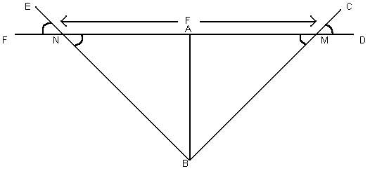
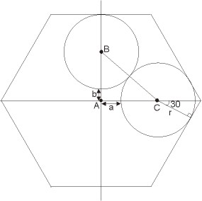

10200 - Prime Time (By: Zhang Kaicheng)
Simulating what this problem wants is enough. You don't need sophisticated prime generator such as Sieve of Eratosthenes. Simple (but clever) prime testing is sufficient.
10203 - Snow Clearing
The lane are bidirectional... No matter what, you need to traverse each lane (at least) twice... But if you think about it, the optimal solution will be just that, each edge used twice. No need to do backtracking or whatever. Just sum all the Euclidian distance between each intersection, then multiply it by two, and then divide by plowing speed (20 km/hour) to get the time. Output the time in mm:ss format (minutes:seconds).
10210 - Romeo and Juliet ! (by: Turjo)
We know from the problem statement, "N,A & M are always kept in a straight
line". So, F & D are points in this line too i.e. F,N,A,M & D are all on the
same line. So we get a triangle BMN with sides MN, BN and BM. The problem
statement asks us to find the base of this triangle.
ENF and CMD are given and angle BNM=ENF, BMN=CMD, (opposite angles of two
intersecting straight lines). Height of the triangle is AB, which we need to
calculate from the co-ordinates of A and B. In triangle ABM, base AM=AB/tan(AMB).
In triangle ABN, base AN=AB/tan(ANB). As triangle BMN=ABN+ABM, the length of
base of BMN, MN=AM+AN. This is the result.

10219 - Find the ways ! (By: Niaz)
If you have a number and someone ask you to tell how many digits are there, what will you do? Of course you will not go to count the digit by pointing your finger! There is a formula to count the digit for a number.
digit = floor [log10(number)] + 1
This formula is enough for this problem. While doing the combination,
instead of multiplication do summation and division do subtraction. Finally
take the floor and increase 1.
Note:
1. be careful of overflow, n and k can be very big (to play safe I use long
long ~> %lld)
2. try to maintain the sum of log10s inside double data type limit... i.e.
do subtractions whenever possible... i.e.
digit of 6 C 2 = floor [ log10(6) + log10(5) -
log10(2) - log10(1) ] + 1
calculate alternatively as follows:
floor [ log10(6) - log10(2) + log10(5) - log10(1) ] + 1
10220 - I Love Big Numbers !
1000! can be represented using 427 consecutive long integer to store the result. However, if you are confused, just use your standard Big Integer algorithm, then pre-calculate all the factorial from 0-1000. Then count the sum of digits one by one ... It is slow but you can pre-calculate it anyway...
Even though your Big Num code is slow, you compute it on your computer not on judge system. Time limit can be avoided using this method.
10221 - Satellites (By: Niaz)
This is a pure geometry/trigonometry problem. The steps will be like this:
Step 1 : First,
convert the degree to radian
(If it is given in minute then convert it to degree first. deg=min/60, rad=(pi*deg)/60).
Step 2 : If degree == 180
arc = (R+d) * red
cord = 2 * R+d // R is
the radius of the earth, d is the distance from
earth
Step 3 : if degree < 180
arc = (R+d) *
red
cord = (R+d) * (sin(red)
/ sin(red2)) // red2 = (pi * (180 - deg)) / 180
Don't forget to take the smallest side.
It means, if the given degree > 180, then degree =
360 - degree.
10222 - Decode the Mad Man
Do what they want. Simple.
10223 - How many nodes ?
Catalan number is the answer for total number of binary trees. In this problem you are required to compute the reverse Catalan number. But, since computing the reverse is a bit hard, use a trick... Since there is only 19 Catalan numbers less than 2^32-1 (as required in input), You can pre-calculate them first, then whenever you get the input, check where its index in the Catalan number array.
Those 19 numbers are: {
1,2,5,14,42,132,429,1430,4862,16796,58786,208012,742900,
2674440,9694845,35357670,129644790,477638700,1767263190 }.
If you want challenge, please compute these numbers by yourself first.
10226 - Hardwood Species
This problem seems 'easy' because what you need to do is to count the percentage of each tree in the population. The hardest part is because number of trees can be 1 million, making standard data structure too slow... You need a kind of sophisticated implementation of hash table or binary search tree to store these tree name <-> frequency mapping... The easiest way is to use C++ STL map. Study the documentation to master the usage of this library.
10227 - Forests
Use Union-Find data structure... Initially create P sets (P = number of people), and then union set i and set j if people i and people j hear the same thing (they have consistent opinion). Do that for all pairs of i and j (still within time limit, don't worry). At the end, output how many sets remaining. This number of remaining sets signify the number of different groups of opinions. Done :)
10229 - Modular Fibonacci
We are familiar with Fibonacci sequence: 0,1,1,2,3,5,8,13,21... In this problem we are asked to compute this sequence mod 2^m. So the above sequence if mod by 2^2 = 4 will become: 0,1,1,2,3,1,0,1,1. Since n can be as big as 2147483647, you'll get TLE if you calculate it linearly. Fortunately there is a O(log n) method to calculate Fibonacci, click here and search for Fibonacci. By using this O(log n) Fibonacci computation algorithm, you are on the safe side. Just modulo the result by 2^m on the fly... Oh yeah, don't forget to use long long (Int64) data structure.
10235 - Simply Emirp
This problem is a bit tricky...
Basically there are only 3 possible cases:
1. if N is really not prime, then directly output "not prime"
2. Hm... N is prime
2.a). if N is not the same as reverse of N and the reverse of N is prime,
output "emirp"
2.b). not emirp, just output "prime"
10238 - Throw the Dice (by: Eduard Piloposyan)
This is very good PIE problem. Can be solved using DP too. Must use BigNumber. Similar to problem 10759.
10242 - Fourth Point!!
You know the common points because among the 4 given coordinates, 2 of them must be similar, then you can generate 2 vectors from the given input.
Rough sketch:
/
/
Common point -----
Translate this common point along the first vector, and then translate again the resulting point along the second vector. You'll get the fourth one.
----- Fourth Point!!
/ /
/ /
Common point -----
10245 - The Closest Pair Problem
This problem can be solved efficiently using O(5n) Plane Sweep algorithm (after sorting the points using O(n log n) algorithm)... Details regarding Plane Sweep algorithm can be found in several text in Computational Geometry. Do some google search regarding keywords "Plane Sweep" & "Closest Pair".
10249 - The Grand Dinner
Even though the underlying algorithm for this "complex" problem is Maximum Flow and seems so similar to problem 10092, this problem is actually a special version of Maximum Flow since the bipartite graph in the middle is a complete bipartite graph..., therefore this problem can be solved using Greedy method.
Anyway let's analyze the Maximum Flow solution first.
->(capacity member1) -> Team1 Table1
(capacity size1)-->
Source ->(capacity member2) -> Team2 -**-> Table2 (capacity size2)--> Sink
->(capacity memberM) -> TeamM
Table3 (capacity size3)-->
TableN (capacity sizeN)-->
** Draw edge for any possible matching of team and table, all has capacity
1. Why? because we want to try to distribute members from a team to these
tables. A maximum flow of this Flow Network is what we want answer...
Pass this Flow Graph to your Network Flow algorithm (Ford Fulkerson, Edmund Karp, or anything else that you know) to get the maximum flow. Output "1" and the distribution of table number per team if all teams has max flow. Output "0" otherwise...
Okay, this will solve the problem, but will not be able to pass the time limit. To be able to pass the time limit, we must use the property that this graph is a complete bipartite graph, use the following algorithm:
-. sort the team based on number of members (decreasing)
-. then greedily assign them to tables considering that:
capacity limit of each table = min(capacity of that table,number of
team)
because no member of the same team sit in the same table.
-. so just spread the team members over the tables that has remaining
capacity
-. decrease the capacity of the selected table.
-. repeat this process...
-. if all person can be placed => output the configuration, else output
"0"
10252 - Common Permutation
At first, when you see the problem title "Permutation", you may be thinking of n! possible permutation of characters with length n... However this problem is far easier than that.
If you examine carefully, "permutation of subsequence" really simplifies the problem. All you have to do now is count each alphabet's frequency for string a and string b, and choose the smallest possible value for 'a', for 'b', ... up to 'z' where these common frequency > 0.
Example:
a
= "pretty" -> 1 'e', 1 'p', 1 'r', 2 't', 1 'y'
b = "women" -> 1 'e', 1 'm', 1 'n', 1 'o', 1 'w'
only 'e' is the common alphabet, and frequency of 'e' is > 0 (which is 1)
so, output 1
10258 - Contest Scoreboard
While the problem itself is not difficult... Multi-field sorting can be troublesome if you don't know the trick. I've just learned from Programming Challenge book that Multi-field sorting can be solved easily using a modification in comparison function... For the details, refer to Programming Challenge chapter 4.5 :)
10260 - Soundex
This problem is very simple, there are many ways to quickly solve it. For me, I do a character to soundex code mapping like this:
/* A B C D E F G H I J K L M N O P Q R S T U V W X Y Z */
int code[] = { 0,1,2,3,0,1,2,0,0,2,2,4,5,5,0,1,2,6,2,3,0,1,0,2,0,2 };
Then, I'll just read the input one by one, as long as the code is different from previous and not zero, I'll print the code. Simple.
10268 - 468-bis (by: Ryan)
The idea to solve the problem is that since
you know the resulting number will fit into an integer, you can carry out
the calculations modulo some number that is:
a) small enough to make the calculations feasible in the time required,
b) large enough that the result is correct.
Luckily if you use a plain 32 bit integer type, then all calculations are
carried out modulo 2^32, so it suffices to just use that, and then the
problem is quite trivial.
10276 - Hanoi Tower Troubles Again!
This is a backtracking problem. You must insert a number one by one in increasing order. Therefore, given n pegs, you can just try inserting the new number to peg 1 ... up to peg n, and see which one can generate perfect square for all pegs.
Note that first layer does not need to be a square number since there is only one ball at that time -> the rule 2 balls pushing each other if not square is not applicable in this case.
This process will eventually stop (I can't prove it, but at a point, there is no way you can put a ball numbered "max + 1" to any of the pegs and make the sum still square number. Stop at this point and return "max".
However you can just pre-calculate everything and send the output to the judge.
10279 - Mine Sweeper
Prepare three 2-D arrays, one to store mine locations, another one to store touched cell so far, and the last one for the output. Just simulate the process.
10281 - Average Speed
Simply do what they want... Back to high school physics, distance = speed * time elapsed.
10282 - Babelfish
Do quick sort and then to find the translation, just a simple binary search will do.
10285 - Longest Run on a Snowboard
This is a backtracking problem, luckily the size of the board is not big (100 * 100). Simply do for any starting position (i,j), try to slide from that point (i.e. recursively backtrack to find lower values until we cannot slide down again). Find the longest slide and output it.
10286 - Trouble with a Pentagon
This problem is very easy... as long as you remember your math (Trigonometry) carefully.
(All in degrees)
The angle in red is 360/5 = 72 (circle divide by 5)
The angle in pink is 90/2 = 45 (corner of square is 90 degrees)
The angle in brown is (180-72) / 2 = 54 (sum of all 3 corners in triangle =
180 degrees)
The angle in blue is 54-45 = 9 (obvious)
The angle in green is 54*2 = 108 (two 54 degrees)
The angle in yellow is 180-108-9 = 63
Sine rule: F/sin(yellow) = s/sin(green)
We want to calculate s, therefore s = sin(green)/sin(yellow)*F =
sin(108)/sin(63)*F
Overall, just output 1.0673956817111818692592637626711 * F :)
10287 - Gifts in a Hexagonal Box (by: Costin)
For case 1, obvious.
For case 2, you just use the sin theorem with those angles.
Case 2: With two circles
Case 3 is even easier: 2*Radius = the distance between 2 opposite sides of the hex, which is L*(sqrt(3)/2)
For case 4, you calculate a and b using the 30 degrees triangle that I found and the use Pythagoras in triangle ABC.

Case 4: with four circles
10293 - Word Length and Frequency
First, analyze the input data size. Max length of word = 30, Each line not more than 80 characters. To solve this problem, you must parse the input carefully, combining hyphenation that spans over 2 lines, removing apostrophes, and then tokenizing them using delimiter: " ?!,." ==> space, question mark, exclamation mark, comma, period. Then simply store their word length frequency and output accordingly.
10295 - Hay Points
To speed up the look up, sort the job description (Hay Point dictionary) by name first, which will take O(m log m) time. Then for all line, lookup each word in Hay Point dictionary using binary search and then return the corresponding Hay Point ~ O(log m). If we can't find the word, return 0 (default value), otherwise just sum all these Hay Points and output it.
10297 - Beavergnaw
This problem is not difficult at all. Given D and V, find d.
To avoid you from copying directly... I'll just remind you that:
Volume of cylinder is: pi * r^2 * height
Volume of cone is: 1/3 * pi * r^2 * height
...derive the equation...
The final result will require you to do sqrt3... aha... new problem... how
to do that in C/C++?
sqrt3 can be expressed in C/C++ using the math equation:
exp(log(a) / 3) = b ==> b^3 = a
10298 - Power Strings
You need to find the number of largest substring that is repeated within s... A brute force approach will do.
10299 - Relatives
Brute force will only result in time limit exceeded. Notice that you only need to count how many multiples of n's prime factors that is below n. For example:
n
= 100 = 2^2 * 5^2, prime factors: 2 and 5
from 1 to 100, there are 50 multiples of 2, starting from
2,4,6,...,96,98,100
from 1 to 100, there are 20 multiples of 5, starting from
5,10,15,...,90,95,100, but 10,20,...,80,90 has already been counted before
(they also multiples of 2). So there are only 10 multiples of 5 from 1 to
100 which is not multiples of 2: 5,15,25,...,75,85,95.
This leaves us with 100-50-10 = 40 numbers which is relatively prime to 100.
Please take note the special case for n = 1, the output is 0.